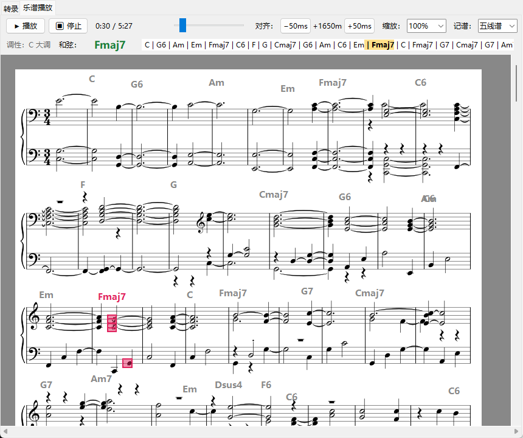
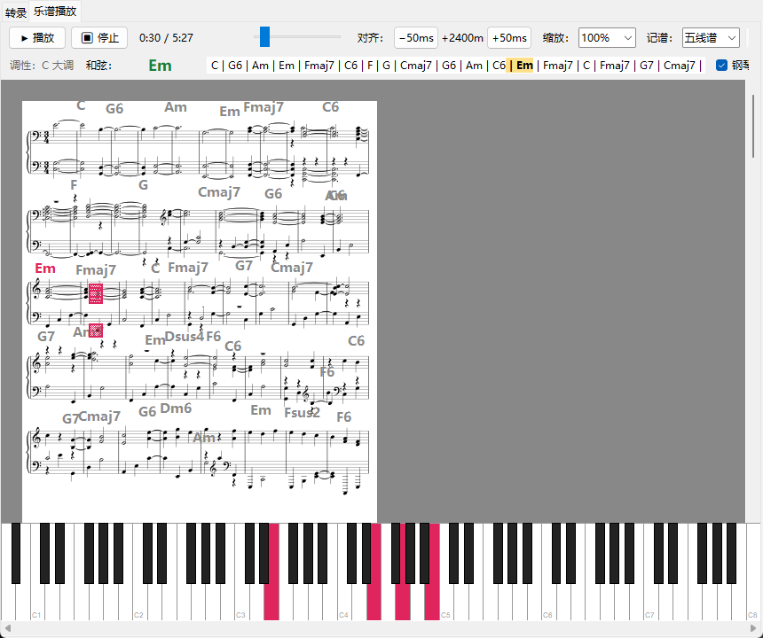
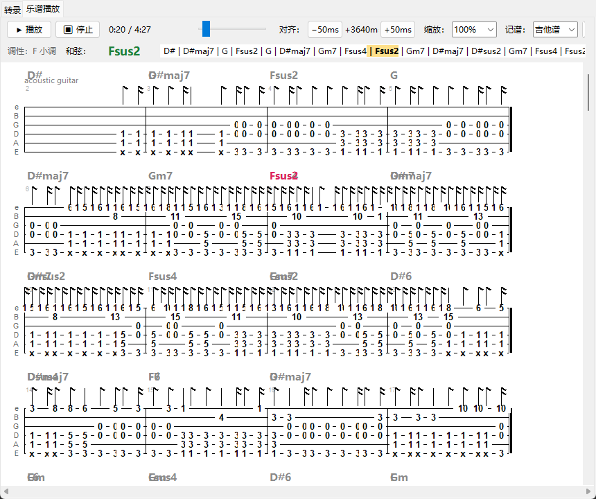

乐谱助手听曲目生成乐谱 · 基于 MuScriptor 多乐器转录模型（arXiv:2607.08168）
这是什么
一个 Windows 桌面小工具：给它一首歌（本地音频文件或 B 站视频链接），它用开源多乐器转录模型 MuScriptor 把音乐转录成 MIDI 和乐谱，并提供一个能「跟着看」的乐谱播放器。
功能
- 输入：本地音频（wav/mp3/flac/m4a…）或 B 站视频链接（BV/av/b23.tv、?p=N 分集），单框自动识别。
- 输出：未量化 MIDI（聆听/DAW 用）+ 量化 MIDI + MusicXML + 总谱/分谱 PDF（吉他/贝斯另有六线谱 PDF）。
- 乐谱跟随播放：播放原音频，当前音符在谱面上实时高亮，自动滚动翻页；点击任意音符跳转播放。
- 三种记谱法：五线谱 / 简谱 / 吉他谱（六线谱 TAB，标准调弦自动分配弦品位，可导出文本 TAB）。
- 和弦进行：实时显示调性与当前和弦，进行序列随播放推进，和弦标记叠加在谱面上。
- 钢琴键盘演示：底部 88 键键盘按声部分色实时点亮发声键。
界面

五线谱跟随播放 + 和弦进行（卡农钢琴曲，B 站链接转录）

底部钢琴键盘实时点亮发声键

吉他谱（六线谱 TAB）视图与和弦标记（指弹《Unravel》）
快速开始
需要 Windows + Python 3.10–3.12 + uv。
git clone https://github.com/lychees/music_transcription.git
cd music_transcription
uv sync # 有 NVIDIA GPU 会自动装 CUDA 版 PyTorch
然后双击 启动乐谱助手.bat。首次使用需要：
- HuggingFace 授权（模型权重为 CC BY-NC 4.0 许可，仅限非商业用途）：登录 HF，在模型页接受许可，创建 read token 填入工具内的登录设置。
- MuseScore 4+：仅当需要导出乐谱 PDF 时（工具界面可指定其路径；只生成 MIDI 则不需要）。
节拍稳定的录音效果最好（乐谱需要量化到节拍网格）；自由速度（rubato）的录音排版效果会明显下降。模型权重仅供非商业用途（CC BY-NC 4.0）。
技术要点
- 转录：MuScriptor（decoder-only transformer，5 秒 mel 分块自回归解码，支持乐器条件限定）。
- 乐谱排版：MusicXML → verovio（SVG + 时间→音符映射），Qt 离屏渲染进 tkinter 画布。
- 简谱 / 吉他谱：自研排版（唱名映射、减时线增时线、跨拍连线、标准调弦品位分配）。
- 和弦：节拍窗口音级模板匹配 + 惯性平滑；调性用 Krumhansl-Schmuckler 估计。